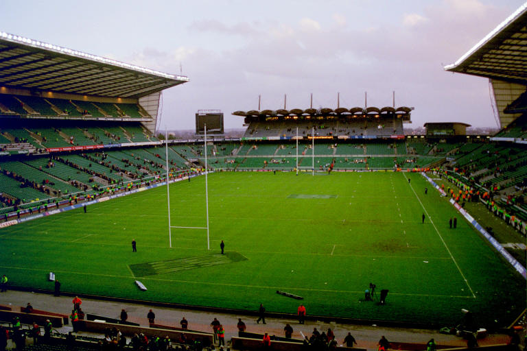
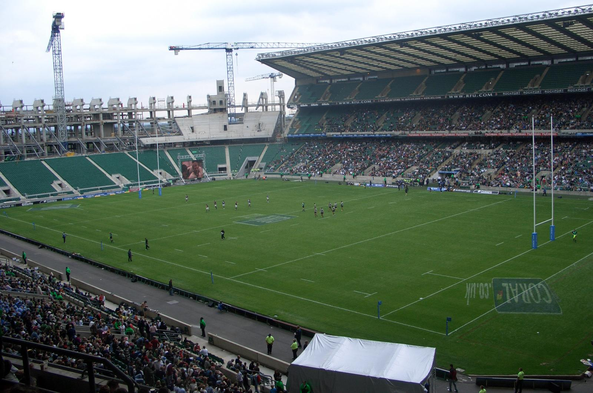
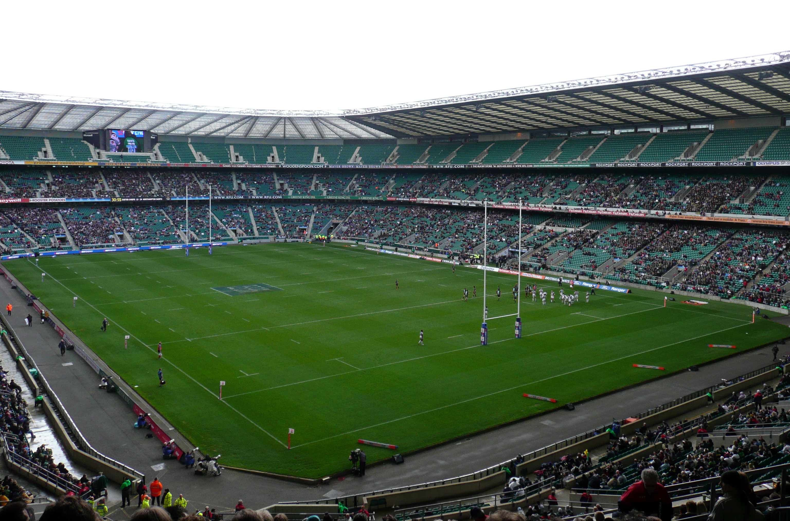

The England national rugby team is coached by Eddie Jones and they play their home matches at Twickenham Stadium
in London. They currently rank at Number 3 in the World according to the IRB Rugby World Rankings. They are
currently the only Six Nations team to win the Rugby World Cup, doing so in 2003. They would also be considered
the most successful team from the Six Nations competing in the Rugby World Cup. Along with their win in 2003, they
have managed to place second on three separate occasions and fourth on another.
Twickenham is their home stadium and it is the largest rugby stadium in the world with a capacity of 80,000. It was
built in 1907 but only hosted the first international game between England and Wales in 1910. Back then it only had
a capacity of 20,000. The land was originally used to grow cabbages until the stadium was built and this has lead to
the nickname "The Cabbage Patch". 
Since 1907 the ground has undergone numerous extensions. In 1920 after the wars the two existing stands were expanded.
In 1921 a stand was built over the Northern Terrace. In 1927 an extension to the East Stand followed by and extension
to the South Terrace. Also in 1927 Radio History was made with the first ever match broadcast from BBC Radio within the
Stadium. In 1932 a new West Stand was completed and this brought the capacity up to approx 43,000.
In 1965, the South Terrace was closed due to structural failings. It was found to be cheaper to build a new stand than
to repair the old one. However planning permission was not granted until 1978 due to objections by local residents. A
period of extensive renovations took place in the early 1980's which continued through until the mid 1990's. In 1981
the South Terrace was rebuilt as the South Stand. In 1989 the North Terrace was taken down and an extended North Stand
was opened in 1990.

After the then Five Nations Championship in 1992, tha stadium saw the development of the new East Stand. Following that
the development of the new West Stand. The Stadium was completed in 1995 to an all seat stadium to accomodate 75,000. The
final phase was sought in 2002 and received in December 2004 for a new South Stand to raise capacity to 82,000, along
with a hotel and conference centre. This new development was started in July 2005 and completed in November 2006.
Twickenham Stadium has quite a history. It has also been used to host Rugby World Cup matches in 1991, 1999 and again in
2015. England hosted the Rugby World Cup in 1991 and again in 2015 which meant both the finals were played in Twickenham.
The Stadium also hosted semi finals in 1999 including France's 43–31 victory over favourites New Zealand, regarded by
many as the best Rugby match of all time.